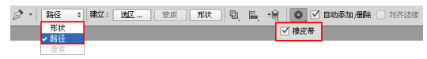

矢量工具与路径
了解绘图模式
- 形状：在单独的图层中绘制一个或多个形状。
- 路径：在当前图层中绘制一个临时工作路径，可随后使用它来创建选区和矢量蒙版，或者使用颜色填充和描边以创建栅格图形。绘制完成后可在“路径”面板中进行存储。
- 像素：直接在选中图层上绘制，与绘画工具的功能非常类似。在此模式中工作时，创建的是位图图像，而不是矢量图形。可以像处理任何栅格图像一样来处理绘制的形状。在此模式中只能使用形状工具。
认识路径
路径是一种不包含像素的轮廓，但是可以使用颜色填充或描边路径。路径可以作为矢量蒙版来控制图层的显示区 域，可以被保存在“路径”面板中或者转换为选区。使用“钢笔工具”和形状工具都可以绘制路径，而且绘制的路径可以是开放式、闭合式或组合式。
认识锚点
路径由一个或多个直线段或曲线段组成，锚点标记路径段的端点。在曲线段上，每个选中的锚点显示一条或两条方向线，方向线以方向点结束，方向线和方向点的位置共同决定了曲线段的大小和形状。 A 表示曲线段，B 表示方向点，C 表示方向线，D 表示选中的锚点，E 表示未选中的锚点。 锚点分为平滑点和角点两种类型。由平滑点连接的路径段可以形成平滑的曲线；由角点连接的路径段可以形成直线或转折曲线。
”形状“模式
设置绘制模式为“形状”后，可以在选项栏中设置填充类型，单击“填充”按钮，在弹出的“填充”对话框中可以从“无颜色”、“纯色”、“渐变”和“图案”4 个类型中选择一种。 单击“无颜色”按钮 即可取消填充；单击“纯色”按钮，可以从颜色列表中选择预设颜色，或单击“拾色器”按钮，在弹出的拾色器中选择所需颜色；单击“渐变”按钮，即可设置渐变效果的填充；单击“图案”按钮，可以选择某种图案，并设置合适的缩放数值。
描边也可以进行“无颜色”、“纯色”、“渐变”、“图案”4 种类型的设置。还可以对形状描边类型进行设置。单击下拉列表，在弹出的对话框中可以选择预设的描边类型，还可以对描边的对齐方式、端点类型以及角点类型进行设置。单击“更多选项”按钮，可以在弹出的“描边”对话框中创建新的描边类型。
“路径”模式
单击工具箱中的形状工具，然后在选项栏中选择“路径”选项 ，可以创建工作路径。绘制完毕后可以在选项栏中快速地将路径转换为选区、蒙版或形状。
“像素”模式
在使用形状工具状态下可以选择“像素”方式。在选项栏中设置绘制模式为“像素”，可设置合适的混合模式与不透明度。这种绘图模式会以当前前景色在所选图层中进行绘制。
钢笔工具组
钢笔工具组包括“钢笔工具”、“自由钢笔工具” 、“添加锚点工具” 、“删除锚点工具”、“转换点工具”5种工具，“自由钢笔工具”又可以扩展为“磁性钢笔工具”。使用钢笔工具组可以绘制多种多样的矢量图形。
“钢笔工具”
“钢笔工具”是最基本、最常用的路径绘制工具，使用该工具可以绘制任意形状的直线或曲线路径。“钢笔工具”的选项栏中有一个“橡皮带”复选框，选中该复选框后，可以在移动指针时预览两次单击之间的路径段。

选中“自动添加 / 删除”复选框后，将“钢笔工具”定位到所选路径上方时，它会变成“添加锚点工具”；当将“钢笔工具”定位到锚点上方时，它会变成“删除锚点工具”。

选择路径区域选项以确定重叠路径组件如何交叉。在使用形状工具绘制时，按住 Shift 键可临时选择“合并形状”选项；按住 Alt 键可临时选择“减去顶层形状”选项。
使用“钢笔工具”绘制直线
单击工具箱中的“钢笔工具”按钮，在选项栏中选择“路径”选项 ，将光标移至画面中，单击可创建一个锚 点。释放鼠标，将光标移至下一处单击可创建第二个锚点。两个锚点会连接成一条由角点定义的直线路径。
如果要结束一段开放式路径的绘制，可以按住 Ctrl 键并在画面的空白处单击、单击其他工具或按 Esc 键结束路径的绘制。
使用“钢笔工具”绘制波浪曲线
在画布中单击即可出现一个锚点，释放鼠标，移动光标到另外的位置单击并拖动即可创建一个平滑点。
将光标放置在下一个位置，然后单击并拖拽光标创建第二个平滑点，注意要控制好曲线的走向。
使用“钢笔工具”绘制多边形
选择“ 钢 笔 工 具 ”， 然 后 在 选 项 栏 中 单 击“ 路径”按钮,然后在画面中确定路径的起点，将光标移动到下一处，然后单击创建一个锚点，两个锚点会连接为一条直线路径。 继续创建出锚点，最后将光标放置在起点上，当光标改变形状时，单击闭合路径，完成多边形的绘制。
使用“自由钢笔工具”绘图
“自由钢笔工具”比较适合绘制较随意的图形，就像用铅笔在纸上绘图一样，绘制完成后，可以对路径进行进 一步的调整。选中“自由钢笔工具”，在画布中单击确定路径的起点，按住鼠标左键的同时拖动光标，画布中 会自动以光标滑动的轨迹创建路径，其间将在路径上自动添加锚点。
在“自由钢笔工具”选项栏中包含“曲线拟合”参数的控制，该值越大，创建的路径锚点越少，路径越简单；该值越小，创建的路径锚点越多，路径细节越多。
使用“磁性钢笔工具”绘图
在“自由钢笔工具”的选项栏中有一个“磁性的”复选框，选中该复选框，“自由钢笔工具”将切换为“磁性钢笔工具”，使用该工具可以像使用“磁性套索工具”一样快速勾勒出对象的轮廓路径。在选项栏中可打开“磁性钢笔工具”的选项，这同时也是“自由钢笔工具”的选项。
使用“添加锚点工具”
使用“添加锚点工具”可以直接在路径上添加锚点。在使用“钢笔工具”的状态下，将光标放在路径上，待光标变成 形状时，在路径上单击，也可添加一个锚点。
使用“删除锚点工具”
使用“删除锚点工具”可以删除路径上的锚点。将光标放在锚点上，当光标改变形状时，单击即可删除锚点。在使用“钢笔工具”的状态下，直接将光标移动到锚点上，光标也会改变形状。
使用“转换点工具”调整路径弧度
使用该工具在角点上单击，可以将角点转换为平滑点。在平滑点上单击，可以将平滑点转换为角点。

路径的基本操作
选择并移动路径
使用“路径选择工具”，单击路径上的任意位置， 可以选择单个的路径；按住 shift 键单击可双选择多个路径，同时它可用来移动、组合、对齐和分布路径。按住 ctrl 键并单击可双将当前工具转化为“直接选择工具”。
选择并调整锚点
“直接选择工具”，主要用来选择路径上的单个或个锚点，可移动锚点、调整方向线。单击可以选中其中某一个锚点；框选或按住 Shift 键单击可以选择多个锚点；按住 ctrl 键并单击可双将当前工具转化为“路径选择工具”。
变换路径
在“路径”面板中选择路径，然后执行“编辑 > 变换路径”菜单下的命令即可对其进行相应的变换。变换路径与变换图像的方法完全相同，这里不再进行重复讲解。
定义为自定形状
定义形状与定义图案、样式画笔类似，可以保存到“自定形状工具”的形状预设中，以后如果需要绘制相同的形状，可以直接调用自定的形状。绘制路径以后，执行“编辑> 定义自定形状”命令，可以将其定义为形状。 在弹出的“形状名称”对话框中为形状取一个名字。在工具箱中单击“自定形状工具”按钮 ，然后在选项栏中单击“形状”选项后面的倒三角形图标 ，接着在弹出的“自定形状”面板中就可以进行选择。
将路径转换为选区
在路径上单击鼠标右键，然后在弹出的菜单中选择“建立选区”命令，在弹出的“建立选区”对话框中设置相关参数。按住 Ctrl 键在“路径”面板中单击路径的缩略图，或单击“将路径作为选区载入”按钮。也可以使用快捷键，按 Ctrl+Enter 组合键将路径转换为选区。
填充路径
使用“钢笔工具”或形状工具（“自定形状工具”除外）状态下，在绘制完成的路径上单击鼠标右键，选择“填充路径”命令，可以打开“填充子路径”对话框。在“填充子路径”对话框中可以对填充内容进行设置，这里包含多种类型的填充内容，并且可以设置当前填充内容的混合模式以及不透明度等属性。
描边路径
在描边之前需要先设置好描边工具的参数。使用“钢笔工具”或形状工具绘制出路径。在路径上单击鼠标右键，在弹出的菜单中选择“描边路径”命令，打开“描边路径”对话框，在该对话框中可以选择描边的工具。
路径面板
“路径”面板
执行“窗口 > 路径”命令，可以打开“路径”面板。
存储工作路径
工作路径是临时路径，是在没有新建路径的情况下使用“钢笔工具”等绘制的路径，一旦重新绘制了路径，原有的路径将被当前路径所替代。 如果不想工作路径被替换掉，可以双击其缩略图，打开“存储路径”对话框，将其保存起来
新建路径
在“路径”面板下单击“创建新路径”按钮 ，可以创建一个新路径层，此后使用“钢笔工具”等绘制的路径都将 包含在该路径层中。按住 Alt 键的同时单击“创建新路径”按钮，可以弹出“新建路径”对话框，可从中进行名称的设置。
复制/粘贴路径
如果要复制路径，在“路径”面板中拖拽需要复制的路径到 “创建新路径”按钮 上，即可复制出路径的副本。如果要将当前文档中的路径复制到其他文档中，可以执行“编辑 > 拷贝”命令，然后切换到其他文档，执行“编辑> 粘贴”命令即可。
删除路径
如果要删除某个不需要的路径，可以将其拖拽到“路径”面板下面的“删除当前路径”按钮上，或者直接按 Delete 键将其删除。
显示路径
如果要将路径在文档窗口中显示出来，可以在“路径”面板中单击该路径。
隐藏路径
在“路径”面板中单击路径以后，文档窗口中就会始终显示该路径，如果希望将其隐藏，可以在“路径”面板的空白区域单击，即可取消对路径的选择。
形状工具组
Photoshop 的形状工具组中包含多种矢量形状工具，如“矩形工具” 、“圆角矩形工具” 、“椭圆工具” 、“多边形工具” 、“直线工具” 和“自定形状工具” ，而“自定形状工具” 中又包含非常多的形状，并且用户可以自行定义其他形状。
使用“矩形工具”
“矩形工具”的使用方法与“矩形选框工具”类似，可以绘制出正方形和矩形。绘制时按住 Shift 键可以绘制出正方形；按住 Alt 键可以以鼠标单击点为中心绘制矩形；按住 Shift+Alt 组合键可以以鼠标单击点为中心绘制正方形。在选项栏中单击 图标，可以打开“矩形工具”的设置选项。
使用“圆角矩形工具”
“圆角矩形工具”可以创建出具有圆角效果的矩形，其创建方法及选项与“矩形工具”完全相同。在选项栏中可以 对“半径”数值进行设置，“半径”选项用来设置圆角的半径，数值越大，圆角越大。
使用“椭圆工具”
如果要创建椭圆，直接拖拽鼠标进行创建即可；如果要创建圆形，可以按住 Shift 键或 Shift+Alt 组合键（以鼠标单击点为中心）进行创建。
使用“多边形工具”
使用“多边形工具”可以创建出正多边形（最少为 3 条边）和星形，其设置选项如图。
使用“直线工具”
使用“直线工具”可以创建出直线和带有箭头的路径。
使用“自定形状工具”
使用“自定形状工具”可以创建出非常多的形状。这些形状既可以是 Photoshop的预设，也可以是用户自定义或加载的外部形状。